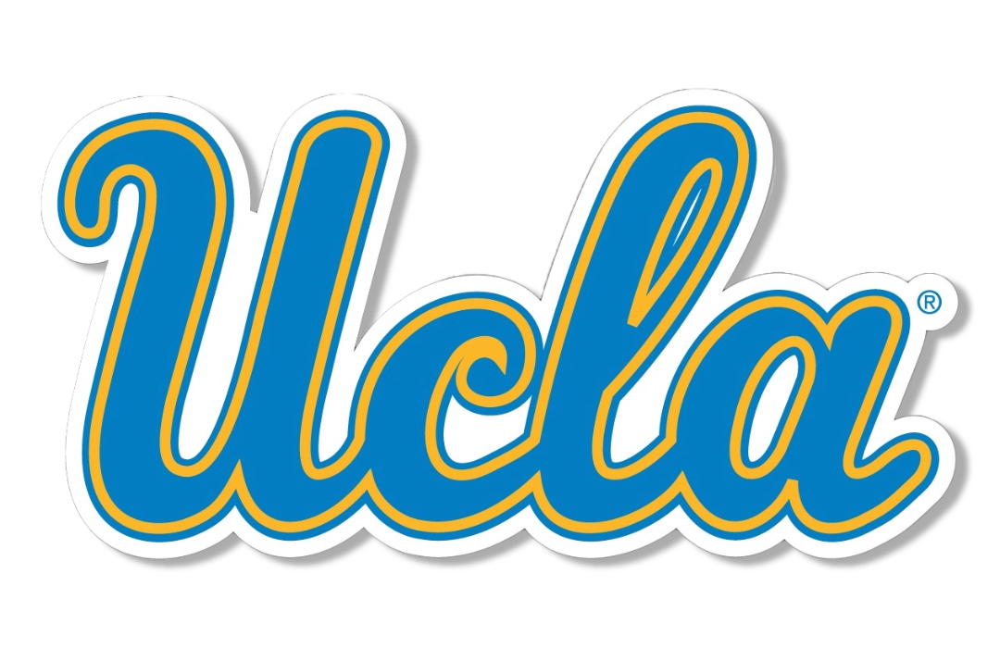

Hi there! 👋
My name is Kai Davey, and I am a first-year Computer Science student at UCLA. My passion lies at the intersection of software engineering and design. From building apps and websites to creating graphics and prototypes, I am dedicated to designing digital tools that are both functional and accessible.

My Journey to Development
My journey started in sixth grade when a classmate's parent first introduced me to the idea of creating an app. Even though that project only involved paper sketches, it sparked something that led me to explore programming, graphic design, and eventually front-end development. Since then, I’ve studied Java and HTML, designed logos and apparel for school clubs, and created app mockups in Figma. A pivotal moment for me was taking DEV109: Intro to Web Development at a local community college, where I discovered how seamlessly coding and design can come together in front-end development.
Now at UCLA, I am focused on human-centered design and front-end engineering. My goal is to create software that empowers people of all backgrounds by making technology simpler, more intuitive, and more inclusive.
Goals
In addition to pursuing my Computer Science degree, I aim to specialize in design and interface development, and take courses to further enhance my web and app design skills. I am also interested in minoring in Chinese and studying abroad in Singapore to improve my language proficiency and global perspective.